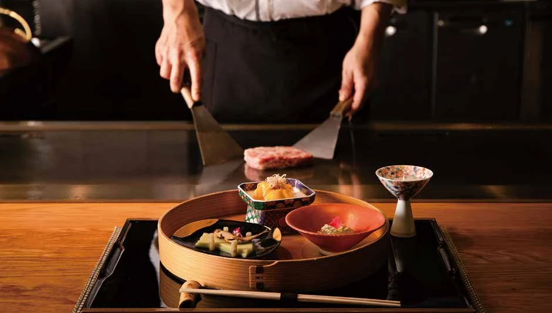

TEPPANYAKI
鉄板焼ダイニング 佐賀竹彩
電話で予約・お問い合わせ ↗0952-37-0885 （竹彩直通）
公式の予約窓口を見る ↗RESERVATION
ご滞在も、お食事も。
佐賀で過ごす時間を、ここから。
お子様を含むご予約は、予約サイトで人数・年齢を設定してください。検索結果は別タブで開きます。
往復航空券と宿泊をまとめて検索します。到着空港は佐賀空港です。お子様・旅程の詳細は予約サイトで設定してください。
TEPPANYAKI
0952-37-0885 （竹彩直通）
公式の予約窓口を見る ↗CHINESE RESTAURANT
0952-28-2655 （シャンリー直通）
Web予約窓口は現在メンテナンス中です。お電話でお問い合わせください。
Web予約窓口の状況を確認 ↗各店舗の予約窓口へご案内します。Webフォームでのお申し込みは、店舗からの連絡・案内をご確認ください。
A MOMENT IN SAGA
有田焼の器に、肥前びーどろのグラス。
佐賀の恵みを味わい、テラスで風を感じる。
街のほど近くにありながら、
ゆっくりと時が流れる場所。
ガーデンテラス佐賀で、くつろぎのひとときを。

ROOMS & SUITES
プライベートテラスとジャグジーを備えた
スイートルーム、テラスツイン。
佐賀の伝統工芸をとりいれた客室で、
土地の魅力に触れる滞在を。

SLOW DOWN, STAY A WHILE.
水と緑と、何もしない贅沢。
THE TASTE OF SAGA
目の前で仕上げる鉄板焼。
会話が弾む、中国料理。
この土地ならではの食材とともに、
食事の時間をゆっくりお楽しみください。



04 / ACCESS
ガーデンテラス佐賀 ホテル＆リゾート
〒840-0850
佐賀県佐賀市新栄東3丁目7-8
YOUR STAY STARTS HERE